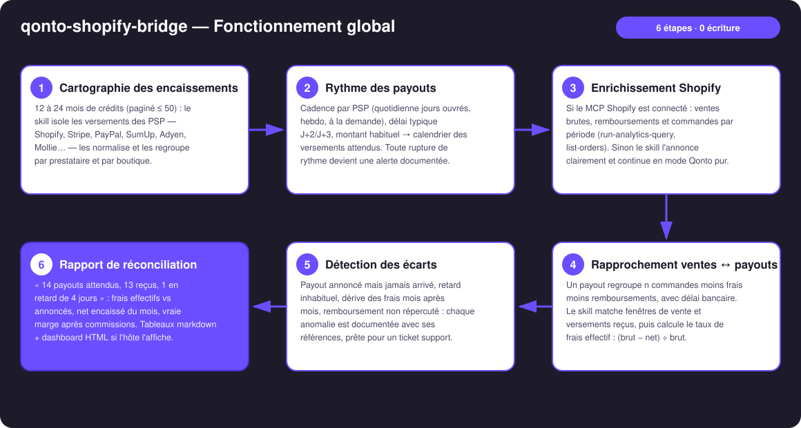
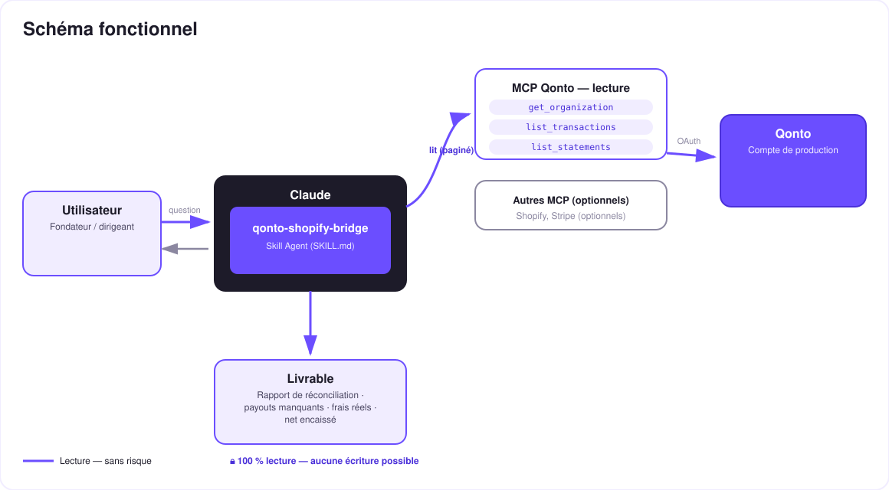

Ce que la boutique annonce vs ce que la banque encaisse — la réconciliation e-commerce de ton compte Qonto.
Tout marchand Shopify vit le même angle mort : les ventes brutes dans la boutique, les payouts nets sur le compte — et entre les deux, des frais, des remboursements, des délais. Le skill rapproche les deux côtés :
Le rythme de chaque PSP (Shopify, Stripe, PayPal, SumUp…) appris depuis l'historique — toute rupture devient une alerte : versement manquant ou en retard.
Taux effectif calculé payout par payout : (brut − net) ÷ brut, comparé au tarif de ton plan si tu l'indiques. Jamais de barème inventé.
Remboursé côté boutique mais pas répercuté côté compte (ou l'inverse) : détecté, documenté, référencé.
Net encaissé par période après toutes les commissions — pas le chiffre flatteur du dashboard boutique.
Le rapport type : « 14 payouts attendus, 13 reçus, 1 en retard de 4 jours ; frais réels 2,9 % + 0,30 € conformes ; net encaissé du mois : X € ».
| Prérequis | Détail | Obligatoire |
|---|---|---|
| Compte Qonto production | Le skill s'adapte à toute organisation — get_organization d'abord, zéro donnée en dur | ✅ |
| Pays | Tous pays Qonto (FR, DE, ES, IT, AT, NL, BE, PT) — la réconciliation de payouts est universelle. Multi-devises : rapport par devise | ℹ️ détecté |
| MCP Qonto connecté | Connecteur officiel (claude.ai / Claude Desktop), login OAuth | ✅ |
| Encaissements PSP | Des crédits SHOPIFY / STRIPE / PAYPAL / SUMUP… identifiables dans l'historique — la matière première du cœur Qonto pur | ✅ |
| MCP Shopify (ou Stripe) | Détecté dynamiquement. Avec : rapprochement fin ventes ↔ payouts. Sans : mode Qonto pur, annoncé clairement | ⭕ recommandé |
| Historique PSP ≥ 3 mois | En dessous : cadence annoncée en confiance basse | ⭕ |

settled_at — le skill matche par fenêtre, pas sur la date annoncée par la boutique
Lecture pure, risque zéro : aucun outil d'écriture, ni côté Qonto ni côté Shopify. Le skill lit, rapproche, documente. La seule « action » qu'il produit est un texte — le brouillon de ticket support que toi seul décides d'envoyer.
| Anomalie | Comment | Ce que tu obtiens |
|---|---|---|
| Payout manquant | Attendu selon la cadence apprise (et/ou annoncé côté boutique), rien sur le compte au-delà du délai typique | Brouillon de ticket support : date, montant attendu, plage de commandes, référence du relevé (list_statements) |
| Payout en retard | Arrivé, mais N jours au-delà du délai appris | Alerte datée + historique des délais |
| Dérive des frais | Taux effectif (brut − net) ÷ brut qui bouge mois après mois | Courbe de tendance, comparaison au tarif annoncé de ton plan (si fourni) |
| Remboursement non répercuté | Remboursé côté boutique, pas de déduction correspondante côté compte (ou l'inverse) | Liste des cas, références des deux côtés |
| Retraits manuels (PayPal) | Pattern « à la demande » reconnu | Cadence requalifiée — pas de fausse alerte |
| Sortie | Format | Quand |
|---|---|---|
| Réponse dans la conversation | Tableaux markdown (réconciliation, frais, net encaissé, anomalies) | Toujours — c'est la base |
| Dashboard interactif | Fichier/artifact HTML : timeline des payouts (trous en évidence), tendance du taux de frais, barres net/mois | Si l'hôte affiche les fichiers (artifacts claude.ai, Claude Desktop, Claude Code) ; repli automatique sur les tableaux sinon |
| Brouillon de ticket support | Texte prêt à envoyer à Shopify/Stripe, toutes références incluses | À chaque payout manquant détecté |
La démo ≤ 3 min jointe à la PR suit le storyboard : le problème (la boutique dit X, la banque dit Y) → cadence des payouts en Qonto pur → réconciliation enrichie Shopify → le payout manquant détecté, ticket support prêt → rapport final et vraie marge. Tournée en live sur une boutique et un compte de production réels.
| Idée | Effort | Note |
|---|---|---|
| MCP Stripe en second enrichissement symétrique | Faible | Même logique que Shopify — détection dynamique |
| Alerte récurrente « payout manquant » (rituel du lundi matin) | Faible | Le skill est idempotent, il suffit de le relancer |
| Rapprochement commande par commande (payout → liste exacte des orders) | Moyen | get-order le permet déjà, coût en appels |
| Marge nette par produit (commissions ventilées) | Moyen | Combine run-analytics-query + frais réels |
| Multi-PSP consolidé (Shopify + PayPal + SumUp) | Faible | Le cœur Qonto pur le fait déjà par PSP |